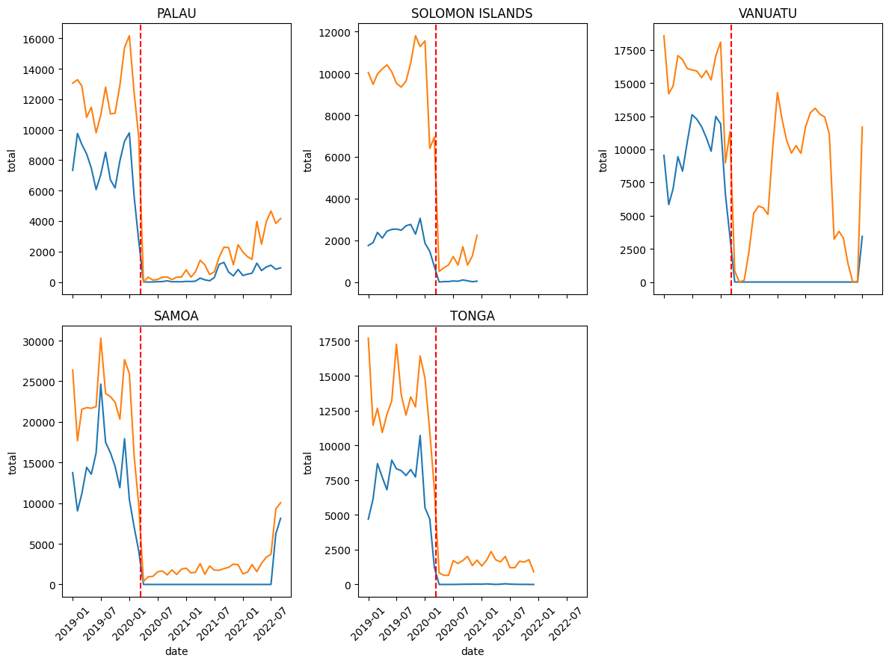

Official Data#
import os
os.chdir("../../")
import pandas as pd
import numpy as np
import seaborn as sns
import matplotlib.pyplot as plt
from src.tsa.ts_utils import *
Official and Aviation (Seats Arrivals) from 2019#
Show code cell source
def process_data(path):
df = pd.read_csv(path).drop("Unnamed: 0", axis=1)
df.columns = [col.lower() for col in df.columns]
if "date" not in df.columns:
df["date"] = [
str(int(y)) + "-" + str(int(m)) for y, m in zip(df.year, df.month)
]
df["date"] = pd.to_datetime(df["date"])
return df
def draw_plot(df, country, ax):
temp = df[["date", "total", "seats_arrivals_total"]]
sns.lineplot(x="date", y="total", data=temp, ax=ax)
sns.lineplot(x="date", y="seats_arrivals_total", data=temp, ax=ax)
ax.axvline(pd.Timestamp(2020, 3, 11), color="r", linestyle="--")
ax.set_title(str(country).upper().replace("_", " "))
ax.tick_params(axis='x', rotation=45)
return ax
countries = ["palau", "solomon_islands", "vanuatu", "samoa", "tonga"]
fig, ax = plt.subplots(2, 3, figsize=(12, 9), sharex=True)
for idx, country in enumerate(countries):
path = os.getcwd() + "/data/tourism/" + str(country) + \
"/intermediate/" + str(country) + "_merged.csv"
data = process_data(path)
draw_plot(data, country, ax[idx // 3, idx % 3])
ax[1, 2].remove()
plt.tight_layout()
plt.show()

Stationarity Table for Official Statistics#
Show code cell source
adf_dfs = pd.DataFrame()
for country in countries:
path = os.getcwd() + "/data/tourism/" + str(country) + \
"/intermediate/" + str(country) + "_monthly_visitor.csv"
data = process_data(path)
adf_df = pd.DataFrame(adf_test(data["total"]), columns=[country.upper().replace("_", "")]).T
adf_dfs = pd.concat([adf_dfs, adf_df], axis=0)
display(adf_dfs)
| Test Statistic | p-value | # Lags Used | Number of Observations Used | Critical Value (1%) | Critical Value (5%) | Critical Value (10%) | |
|---|---|---|---|---|---|---|---|
| PALAU | -1.230261 | 0.660444 | 13.0 | 170.0 | -3.469413 | -2.878696 | -2.575917 |
| SOLOMONISLANDS | -2.602577 | 0.092466 | 3.0 | 140.0 | -3.477945 | -2.882416 | -2.577902 |
| VANUATU | -2.425354 | 0.134708 | 13.0 | 211.0 | -3.461727 | -2.875337 | -2.574124 |
| SAMOA | -3.403589 | 0.010837 | 14.0 | 227.0 | -3.459490 | -2.874358 | -2.573602 |
| TONGA | -2.094926 | 0.246560 | 14.0 | 129.0 | -3.482088 | -2.884219 | -2.578864 |